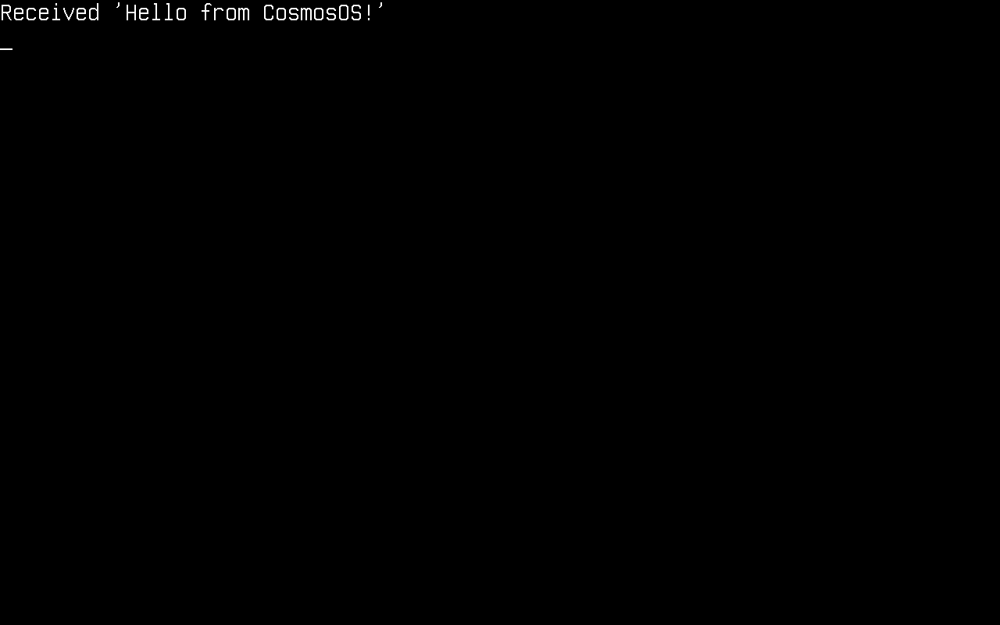
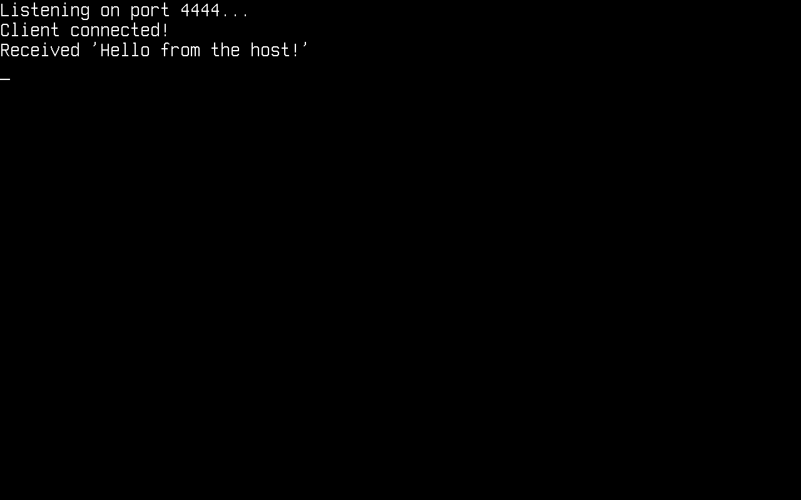
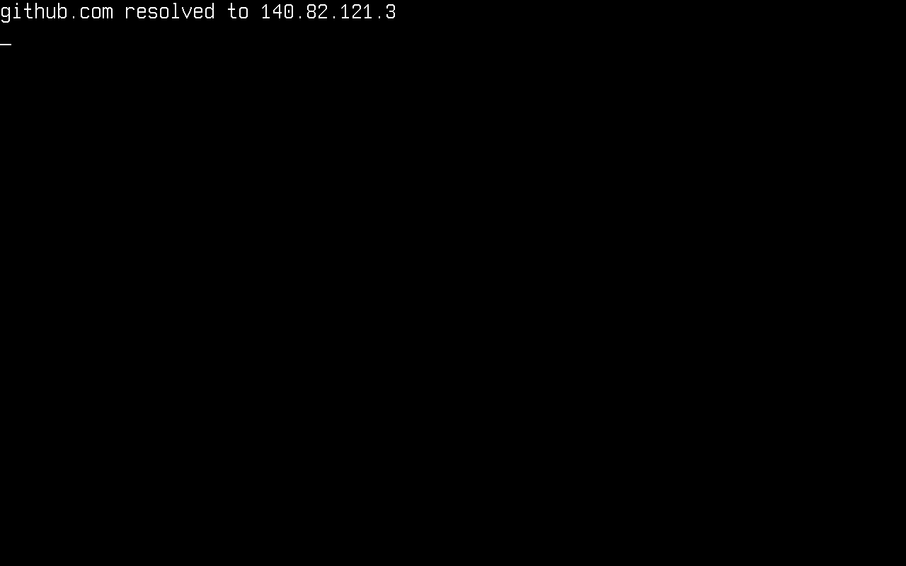

Network
In this article, we will discuss networking on Cosmos Gen3: how to bring the network stack up and send and receive packets. The available protocols are ARP, IPv4, UDP, TCP, DHCP and DNS.
The main differences if you come from Gen2:
| Gen2 | Gen3 | |
|---|---|---|
| TCP | Standard System.Net.Sockets (plugged) |
Standard System.Net.Sockets (plugged) |
| UDP | Cosmos-specific UdpClient class |
Standard System.Net.Sockets.UdpClient (plugged) |
| DHCP / DNS | Cosmos client classes | Cosmos client classes (Cosmos.Kernel.System.Network) |
| NIC drivers | RTL8168, E1000, PCNET | Intel E1000E (x64), virtio-net (x64 PCI + ARM64 MMIO) |
None of these protocols implements every feature of its RFC. If you find bugs or something abnormal, please submit an issue on our repository.
Enable networking in your kernel
Network support is behind a feature switch. Make sure your kernel's .csproj does not turn it off (it defaults to true):
<PropertyGroup>
<CosmosEnableNetwork>true</CosmosEnableNetwork>
</PropertyGroup>
At boot the kernel detects the NIC and registers it with NetworkManager. On x64 both Intel E1000E (QEMU's default q35 NIC, preferred when present) and virtio-net-pci are supported, so cosmos run needs no extra flags. On ARM64 attach a virtio NIC explicitly:
$ cosmos run # x64: default e1000e NIC, user-mode networking
$ cosmos run --nic virtio-net-pci # x64: virtio NIC over PCI
$ cosmos run --nic virtio-net-device # arm64: virtio NIC over MMIO
Virtio-pci devices deliver interrupts via MSI-X, which on ARM64 requires a GICv3 ITS (-M virt,gic-version=3); cosmos run launches ARM64 with QEMU's default GICv2, so use the MMIO variant there.
With QEMU user-mode networking (the default), your kernel lives in a private 10.0.2.0/24 network: the host is reachable at 10.0.2.2, QEMU's built-in DHCP server assigns addresses, and outbound UDP/TCP is NATed to the real network.
These are the usings the snippets below rely on:
using System.Net;
using System.Net.Sockets;
using System.Text;
using Cosmos.Kernel.System.Network;
using Cosmos.Kernel.System.Network.Config;
using Cosmos.Kernel.System.Network.IPv4;
using Cosmos.Kernel.System.Network.IPv4.UDP.DHCP;
using Cosmos.Kernel.System.Network.IPv4.UDP.DNS;
using Cosmos.Kernel.System.Timer;
The network device
NetworkManager owns the detected NICs. Check that a device is there and ready before configuring anything:
var device = NetworkManager.PrimaryDevice;
if (device != null)
{
Console.WriteLine("Device: " + device.Name);
Console.WriteLine("MAC: " + device.MacAddress.ToString());
Console.WriteLine("Link up: " + device.LinkUp);
Console.WriteLine("Ready: " + device.Ready);
}

Initialize the network stack
Before using any protocol, initialize the stack once (this hooks packet reception to the device):
NetworkStack.Initialize();
Configure IPv4
Like on any operating system, the kernel needs an IPv4 configuration (address, subnet mask, gateway) before it can talk to the network. It can be obtained dynamically through DHCP or set manually.
Dynamically through DHCP
DHCPClient.SendDiscoverPacket() runs the whole DISCOVER → OFFER → REQUEST → ACK exchange and applies the resulting configuration. It returns the elapsed milliseconds, or -1 on timeout:
var dhcpClient = new DHCPClient();
if (dhcpClient.SendDiscoverPacket() != -1)
{
IPConfig? config = NetworkConfigManager.Get(device);
Console.WriteLine("IP address: " + config.IPAddress.ToString());
Console.WriteLine("Subnet: " + config.SubnetMask.ToString());
Console.WriteLine("Gateway: " + config.DefaultGateway.ToString());
}
else
{
Console.WriteLine("DHCP timed out");
}

Manually
IPConfig.Enable(device,
new Address(192, 168, 1, 69), // local address
new Address(255, 255, 255, 0), // subnet mask
new Address(192, 168, 1, 254)); // gateway
Get the local IP address
Console.WriteLine(NetworkConfigManager.Get(device).IPAddress.ToString());
UDP
UDP uses the standard .NET UdpClient — no Cosmos-specific classes. Sends go out immediately; for receives, poll Available (a receive with nothing pending would block):
using System.Net.Sockets;
var udpClient = new UdpClient(4242);
/* Send data — 10.0.2.2 is the host under QEMU user networking */
byte[] message = Encoding.ASCII.GetBytes("Hello from CosmosOS!");
udpClient.Send(message, message.Length, new IPEndPoint(IPAddress.Parse("10.0.2.2"), 4242));
/* Receive data */
IPEndPoint remote = new(IPAddress.Any, 0);
while (udpClient.Available == 0)
{
TimerManager.Wait(100);
}
byte[] data = udpClient.Receive(ref remote);
Console.WriteLine("Received '" + Encoding.ASCII.GetString(data) + "' from " + remote.Address);
udpClient.Close();

TCP client
TCP also goes through the standard .NET classes: TcpClient, TcpListener and NetworkStream.
var tcpClient = new TcpClient();
tcpClient.Connect(IPAddress.Parse("10.0.2.2"), 4343);
NetworkStream stream = tcpClient.GetStream();
/* Send data */
byte[] message = Encoding.ASCII.GetBytes("Hello from CosmosOS!");
stream.Write(message, 0, message.Length);
/* Receive data */
while (!stream.DataAvailable)
{
TimerManager.Wait(100);
}
byte[] buffer = new byte[tcpClient.ReceiveBufferSize];
int bytesRead = stream.Read(buffer, 0, buffer.Length);
Console.WriteLine("Received '" + Encoding.ASCII.GetString(buffer, 0, bytesRead) + "'");
tcpClient.Close();

TCP server
TcpListener accepts incoming connections. Poll Pending() to avoid blocking in AcceptTcpClient():
var listener = new TcpListener(IPAddress.Any, 4444);
listener.Start();
Console.WriteLine("Listening on port 4444...");
while (!listener.Pending())
{
TimerManager.Wait(100);
}
TcpClient client = listener.AcceptTcpClient();
Console.WriteLine("Client connected!");
NetworkStream stream = client.GetStream();
while (!stream.DataAvailable)
{
TimerManager.Wait(100);
}
byte[] buffer = new byte[client.ReceiveBufferSize];
int bytesRead = stream.Read(buffer, 0, buffer.Length);
Console.WriteLine("Received '" + Encoding.ASCII.GetString(buffer, 0, bytesRead) + "'");
/* Echo it back */
stream.Write(buffer, 0, bytesRead);
client.Close();
listener.Stop();
To reach a listener inside QEMU user networking from your host, forward a host port to the guest. With plain QEMU that is -nic user,model=e1000e,hostfwd=tcp::4444-:4444, then connect to localhost:4444 on the host.

DNS
DNS uses the Cosmos DnsClient (the .NET Dns class is not plugged yet). Register a nameserver, ask for one domain, and read the answer back:
DNSConfig.Add(new Address(1, 1, 1, 1)); // Cloudflare public DNS
var dnsClient = new DnsClient();
dnsClient.Connect(new Address(1, 1, 1, 1));
/* Ask for a single domain name */
dnsClient.SendAsk("github.com");
/* Receive the answer (5 s timeout) */
Address address = dnsClient.Receive(5000);
if (address != null)
{
Console.WriteLine("github.com resolved to " + address.ToString());
}
dnsClient.Close();

Current limitations
- ICMP is not implemented yet — no ping, in either direction.
System.Net.Dnsis not plugged; use the CosmosDnsClientshown above.- No TLS, so no
HttpClient/HTTPS — raw TCP only. - One NIC: the stack talks to
NetworkManager.PrimaryDevice. - Half-close is not supported:
Close()on an established TCP connection expects the peer to answer the FIN handshake within 5 seconds and throws if it keeps the connection open.
How it works
Your code calls the standard .NET socket classes, whose PAL bottoms out in Socket-level plugs in Cosmos.Kernel.Plugs (SocketPlug, TcpClientPlug, TcpListenerPlug, UdpClientPlug, NetworkStreamPlug). Those delegate to the Cosmos network stack — the TCP state machine and UDP layer over IPv4, ARP and Ethernet — which sends and receives frames through the NetworkDevice driver registered with NetworkManager. The Cosmos DHCPClient and DnsClient sit directly on the Cosmos UDP layer.
TcpClient / TcpListener / UdpClient / NetworkStream (stock BCL)
│
Socket plugs (Cosmos.Kernel.Plugs)
│
Cosmos TCP state machine / UDP (Cosmos.Kernel.System.Network.IPv4)
│ DHCPClient / DnsClient ride UDP directly
IPv4 / ARP / Ethernet
│
NetworkDevice driver (Intel E1000E, virtio-net)